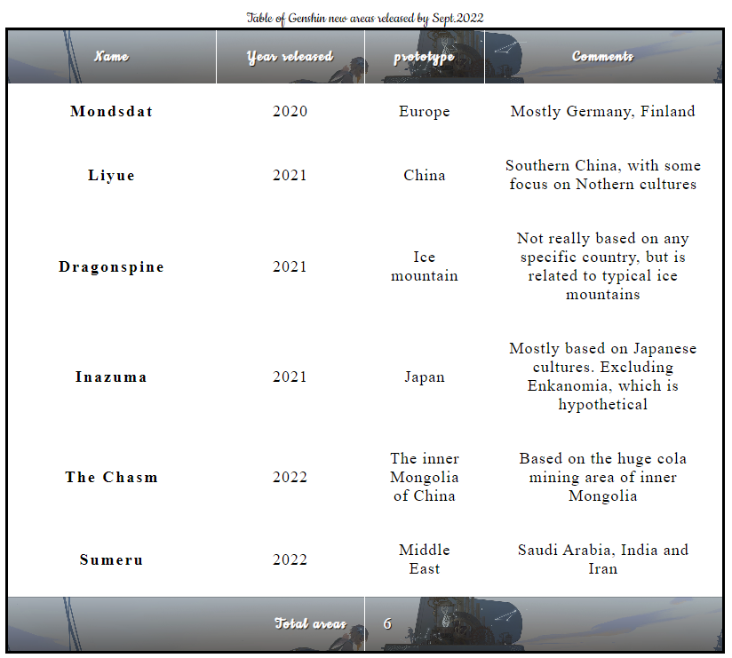
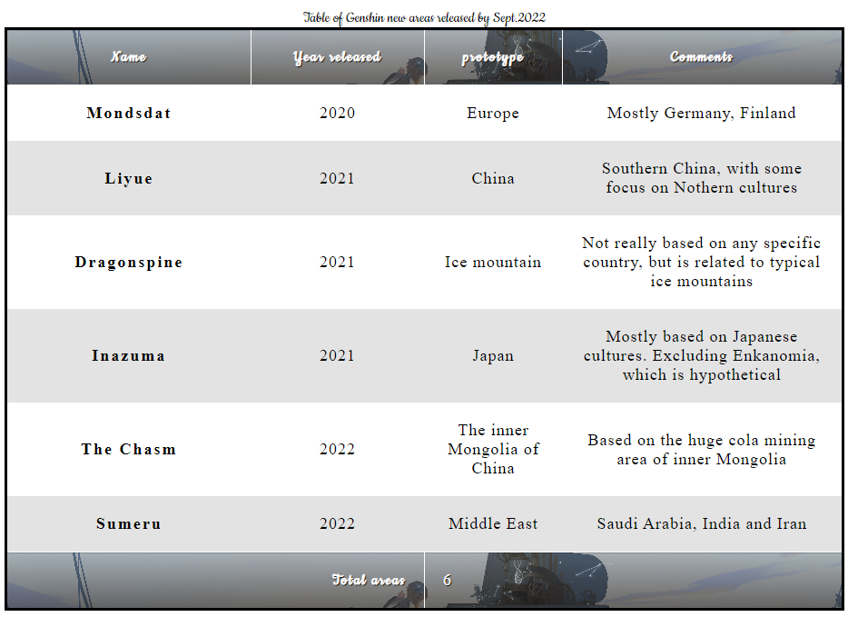
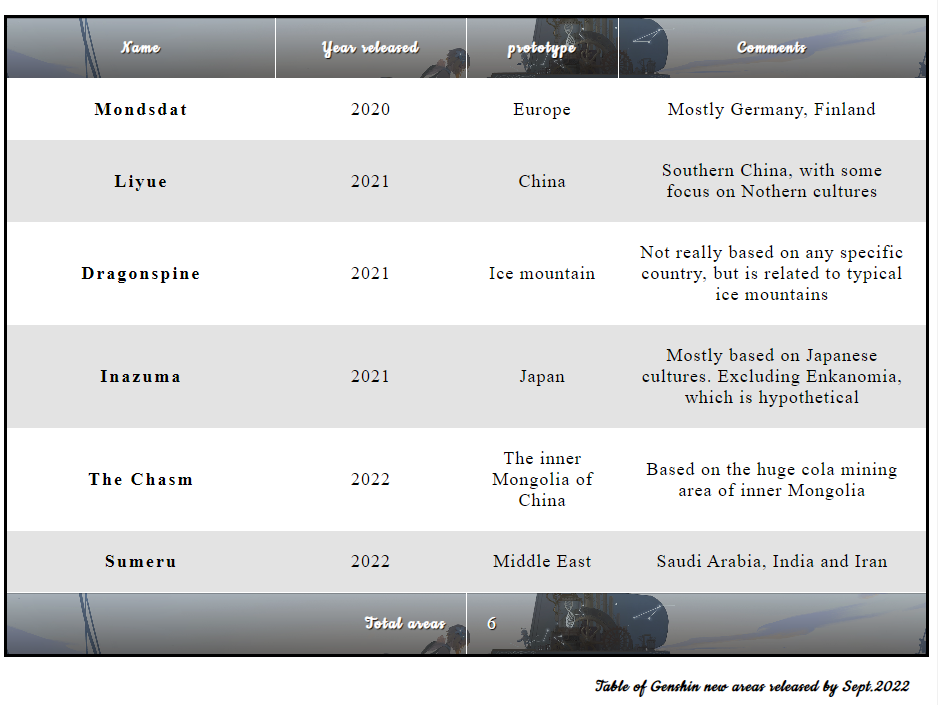

之前在html tables内提到过，html的table是骨架，而styling则需要css来完成。这里就介绍以下css的基本table styling
下面是一个典型的html table，总结了原神开服以来的几个新增地区以及时间，国家/地区原型，注释等等。
| Name | Year released | prototype | Comments |
|---|---|---|---|
| Mondsdat | 2020 | Europe | Mostly Germany, Finland |
| Liyue | 2021 | China | Southern China, with some focus on Nothern cultures |
| Dragonspine | 2021 | Ice mountain | Not really based on any specific country, but is related to typical ice mountains |
| Inazuma | 2021 | Japan | Mostly based on Japanese cultures. Excluding Enkanomia, which is hypothetical |
| The Chasm | 2022 | The inner Mongolia of China | Based on the huge cola mining area of inner Mongolia |
| Sumeru | 2022 | Middle East | Saudi Arabia, India and Iran |
| Total areas | 6 | ||
上面的table是一个结构完整的html表格，包含了scope, caption, thead, tbody等等tags，但是没有styling的话，这个表格看起来就比较messy。
根据mdn 要求，应该创建一个外部的css file，但是在这里我就直接写内置的以排除后期影响。
table的styling的第一步是准备spacing以及layout，使用的code如下:
table{
table-layout:fixed;
width:100%
border-collapse:collapse;
border: 3px solid purple;
}
thead th:nth-child(1){
width:30%;
}
thead th:nth-child(2){
width:20%;
}
thead th:nth-child(3){
width:15%
}
thead th:nth-child(4){
width:35%
}
th,td{
padding:20px;
}
分析一下以上代码：
table-layout以及其的值，fixed一般可以设置在table内。未被style过的table的coloumns会根据column内容的大小来决定size。但是使用table-layout:fixed时，column会以其heading的大小来决定size。而此处，我们有4个heading，因此我们可以使用:nth-child selector来选择第n个child，放在这个context内便是thead th:nth-child(n)，然后在每一个对应的child内设置出width，这个table便是四个heading分别对应30%, 20%, 15%, 35%。然后再将整个table的width设置成100%，这样便可以很完美的占满屏幕的空间并且不拥挤border-collapse以及其的值,collapse为标准的table styling。一般来说，对于一个table设置border时，相邻的格子依然会有spacing，类似mdn的例子，但是使用border-collapse: collapse后，便可以使得香菱的格子没有重复的边界border来分清楚整个table的框架，并且可以用于footer和header的clarificationth和td，使用padding来生成一点间隙来使得table更legible
现在可以在进一步自定义table，来改个字体吧：使用google fonts 来选择心仪的字体，然后使用link元素来调整。先使用<link href="https://fonts.googleapis.com/css2?family=Cookie&display=swap" rel="stylesheet" type="text/css">
来引入字体，然后再用以下的代码来给header和footer单独assign一个字体，这里用的是google的cookie字体
thead th, tfoot th {
font-family: 'Rock Salt', cursive;
}
th {
letter-spacing: 2px;
}
td {
letter-spacing: 1px;
}
tbody td {
text-align: center;
}
tfoot th {
text-align: right;
}
以上的代码并不难懂，但是有以下几个点需要注意:
letter-spacing的调整，增加可读性
因为这个table是原神主题的，我们可以给他来一点原神的特色。比如给header以及footer加个Lumine的图片。
thead, tfoot{
background: url(luminepic.png);
color:white;
text-shadow:1px 1px 1px black;
}
thead th, tfoot th, tfoot td{
background: linear-gradient(to bottom, rgba(0,0,0, 0.1), rgba(0,0,0,0.5));
border: 1px solid white;
}
以上的代码其实一看就明白了，对thead和tfoot的整个section添加背景，且使文字改成白色， 然后在给文字一点阴影。阴影详见text-shadow的用法，简单来说就是x，y和阴影的位置。然后再对整个footer和header搞一个linear gradient来添加一点厚度。此处用的是之前提到过的linear-gradient(to bottom, rgba(0,0,0, 0.1), rgba(0,0,0,0.5));。也就是从上面完全透明到下面50%的透明度，纯黑色的gradient，这步结算后是这样的:
zebra striping，也就是斑马条纹，类似那种交替颜色的表格，比较好用。一个使用的代码如下:
tbody tr:nth-child(odd) {
background-color: rgba(255, 255, 255, 1.0);
}
tbody tr:nth-child(even) {
background-color: rgba(220, 220, 220, 0.8);
}
table {
background-color: grey;
}
单独分析，其实并不难。第一个和第二个selector选择了tbody内的tr，然后使用了nth-child function来根据odd/even来选择对应的tr。然后给整个table row (tr)进行styling。如此便生成了zebra striping。值得一提的是，也可以对tbody设置背景，具体方式参照tfoot的styling。从此以后的效果图下: 
最后一步，给table的caption加上style, 使用以下的css代码：
caption{
font-family:'Cookie', cursive;
padding:20px;
font-style: italic;
caption-side:bottom;
color: black;
text-align:right;
letter-spacing:1px;
}
以上的代码基本没有新东西，除了一个caption-side，代表的是caption的位置，并且接受了bottom的value。全部加起来的table如下:

具体的css代码可以在本文档开头注释处查看。key takeaways：
table-layout: fixed来生成table，这样可以保证table的cell size仅和heading的width(也就是th)有关，也就不会造成崩坏的现象。border-collapse: collapse以去除多余的table borderthead, tbody, tfoot将整个table的html框架分开，这样当style的时候便可以单独进行css styling，避免麻烦text-align来对齐cell的heading及其对应的数据nth-child来选择column以及需求的位置，比如第二个column的selector便是tbody tr td:nth-child(2)